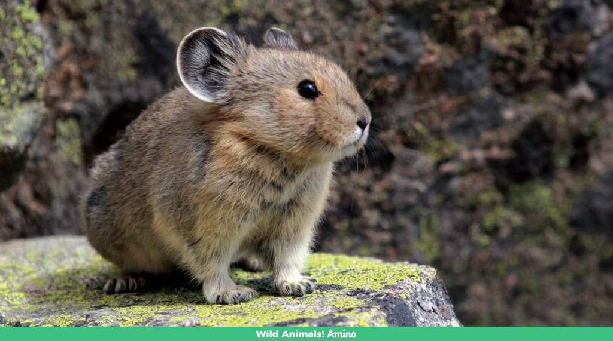
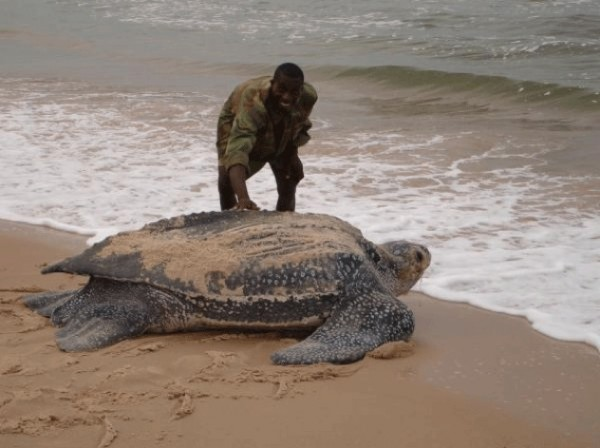
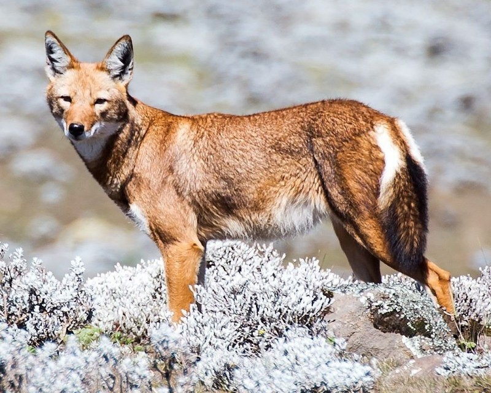

Rinoceronte de Java

Existem menos de 70 indivíduos vivos, tornando-o o rinoceronte mais raro do mundo.
Panda vermelho

Embora seja amplamente conhecido, o panda-vermelho é uma espécie rara e ameaçada que vive nas florestas do Himalaia.
Sapo Golias

É o maior sapo do mundo, encontrado na África Ocidental, mas seu número está diminuindo devido à perda de habitat.
Ili Pika
Um pequeno mamífero que vive nas montanhas do noroeste da China, raramente é visto e foi descrito como o "coelho mágico".
Axolote
.jpg)
Uma espécie de salamandra endêmica do México, é raro devido à degradação do habitat.
Vaquita
.jpg)
O menor cetáceo do mundo, encontrado no Golfo da Califórnia, está à beira da extinção devido à pesca ilegal.
Saola
.jpg)
Também chamado de "unicórnio asiático", é um antílope extremamente raro encontrado nas montanhas do Vietnã e do Laos.
Marmota-das-Rochosas
.jpg) Encontrada nas montanhas do oeste da América do Norte, está ameaçada por mudanças climáticas e atividades humanas.
Encontrada nas montanhas do oeste da América do Norte, está ameaçada por mudanças climáticas e atividades humanas.
Tartaruga-de-espigão de Cantor
Uma espécie rara de tartaruga encontrada no sudeste asiático e ameaçada pela perda de habitat e comércio ilegal de animais de estimação.
Lobo etíope
Uma espécie de lobo endêmica das terras altas da Etiópia, com uma população de menos de 500 indivíduos.